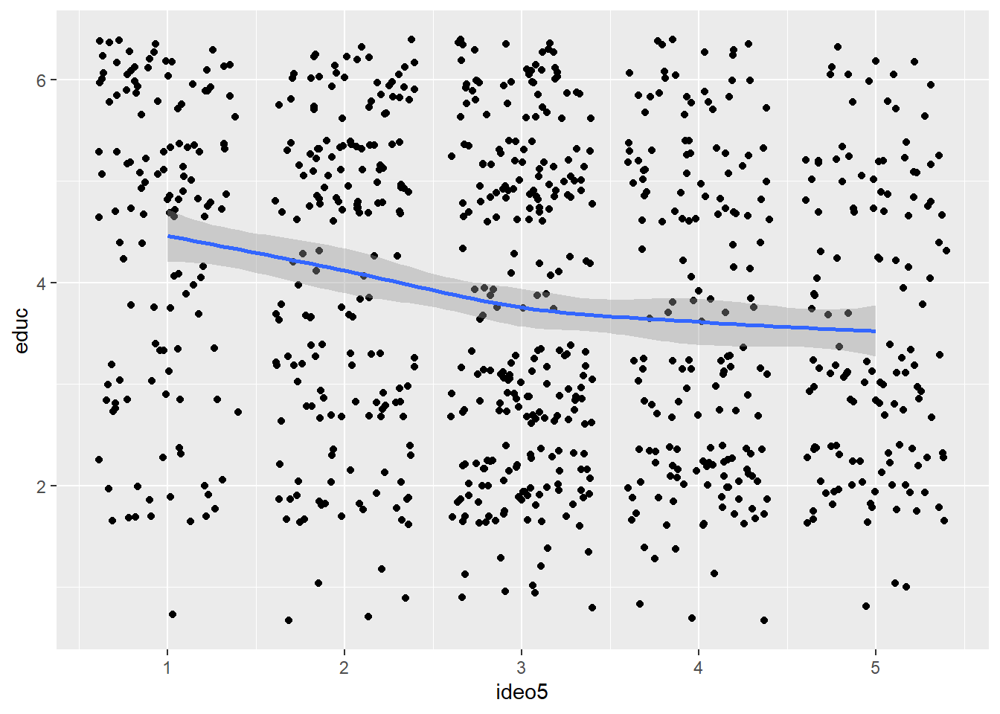

The Advanced visualization using ggplot in R course teaches several ways we can draw scatterplots along-with the geom lines with varying confidence intervals or without them using se=F. The libraries used start with GGaly and gcookbook. You can learn more on http://abidalishaikh.github.io/quarto.
Let’s explore these two libraries; using data(package=“gcookbook”) shows various datasets in this library as below: Data sets in package ‘gcookbook’:
aapl Apple stock data
anthoming Homing in desert ants
cabbage_exp Summary of cabbages data set
climate Global climate temperature anomaly data from 1800 to 2011
corneas Corneal thickness of eyes
countries Health and economic data about countries around the world from 1960-2010
drunk Convictions for drunkenness
heightweight Height and weight of schoolchildren
isabel Data from simulation of hurricane Isabel
madmen Successful sexual relations in Mad Men (TV show) madmen2 Attempted sexual relations in Mad Men (TV show)
marathon Marathon and half-marathon times
pg_mean Means of results from an experiment on plant growth
plum Plum root cuttings (long format)
plum_wide Plum root cuttings (wide format)
simpledat Simple example data set
simpledat_long Simple example data set (long format)
tg Summarized ToothGrowth data
tophitters2001 Batting averages of the top hitters in Major League Baseball in 2001
uspopage Age distribution of population in the United States, 1900-2002
uspopchange Change in population of states in the U.S. between 2000 and 2010
wind Wind speed and direction worldpop World population estimates from 10,000 B.C. to 2,000 A.D.
Most of these datasets have longitudinal information over various time periods.
For this course, We read the already downloaded files from the previous course of the specialization:
Rows: 1000 Columns: 25
── Column specification ────────────────────────────────────────────────────────
Delimiter: ","
dbl (25): caseid, region, gender, educ, edloan, race, hispanic, employ, mars...
ℹ Use `spec()` to retrieve the full column specification for this data.
ℹ Specify the column types or set `show_col_types = FALSE` to quiet this message.
cel <-read_csv("c:/Users/stech/OneDrive/RSpace/2024-25/RCourseggplot/cel_volden_wiseman-_coursera.csv")
Rows: 10262 Columns: 38
── Column specification ────────────────────────────────────────────────────────
Delimiter: ","
chr (2): thomas_name, st_name
dbl (36): thomas_num, icpsr, congress, year, cd, dem, elected, female, votep...
ℹ Use `spec()` to retrieve the full column specification for this data.
ℹ Specify the column types or set `show_col_types = FALSE` to quiet this message.
Variables to consider
For our visualization we use educ and ideo5 of the cces data: both have integer values the higher the educ level better the education and the higher the ideo5 higher the strictness of ideology.
cor(cces$ideo5,cces$educ)
[1] -0.1976095
# we have -ve cor value, we can explore it using plotcces |>select(ideo5,educ) |>ggplot(aes(x=ideo5, y=educ))+geom_jitter()
But we don’t know its trend from the figure so we try add a geom_smooth here, demonstrates the negative correlation trend.
cces |>select(ideo5,educ) |>ggplot(aes(x=ideo5, y=educ))+geom_jitter()+geom_smooth() # we can add level=.9 for 90% C.I. or
`geom_smooth()` using method = 'loess' and formula = 'y ~ x'

# we can also use se=F in geom_soomth to remove the C.I from the smooth line. also we can add method="lm" for straight abline.
library(GGally)
Registered S3 method overwritten by 'GGally':
method from
+.gg ggplot2
The next section visualizes the highest legislative (les) scores for various congress members (thomas_name) in 114th congress. We consider only 25 samples here.
we flip the x and y in above plot without using coord_flip function, here we flipped the x and y mappings alongside we also used the geom_segment to plot a segment of the plot using x, xend and y, yend parameters
Rows: 10262 Columns: 38
── Column specification ────────────────────────────────────────────────────────
Delimiter: ","
chr (2): thomas_name, st_name
dbl (36): thomas_num, icpsr, congress, year, cd, dem, elected, female, votep...
ℹ Use `spec()` to retrieve the full column specification for this data.
ℹ Specify the column types or set `show_col_types = FALSE` to quiet this message.
cel %>%mutate(party =recode(dem, "1"="demo","0"="rep"))%>%group_by(year, party)%>%summarize("Seats"=n(),.groups ="drop")%>%ggplot(aes(x=year,y=Seats, fill=party))+geom_bar(stat="identity")+geom_hline(yintercept =217)+transition_layers() # also use transition_time(years)############ using layers for various geom filters########### using all_pass seniority and party for 115 congcel115 <-filter(cel,cel$congress==115)cel$party<-recode(cel$dem,`1`="Democrat",`0`="Republican")d1 <-filter(cel,congress==115& party=="Democrat")d2 <-filter(cel,congress==115& party=="Republican")ggplot()+geom_jitter(aes(x=seniority,y=all_pass,color=party),data=d1)+geom_jitter(aes(x=seniority,y=all_pass,color=party),data=d2)+#geom_smooth(aes(x=seniority,y=all_pass,color=party),data=d1)+#geom_smooth(aes(x=seniority,y=all_pass,color=party),data=d2)+scale_color_manual(values=c("blue","red"))+transition_layers()
dat <-data.frame(cond=rep(c("A","B"),each=10),xvar =1:20+rnorm(20,sd=3),yvar =1:20+rnorm(20,sd=3))p<- dat %>%ggplot(aes(xvar,yvar))+geom_point(shape=1)plotly::ggplotly(p)
######### Animation using ggplotlycel <-read_csv("c:/Users/stech/OneDrive/RSpace/2024-25/RCourseggplot/cel_volden_wiseman-_coursera.csv")
Rows: 10262 Columns: 38
── Column specification ────────────────────────────────────────────────────────
Delimiter: ","
chr (2): thomas_name, st_name
dbl (36): thomas_num, icpsr, congress, year, cd, dem, elected, female, votep...
ℹ Use `spec()` to retrieve the full column specification for this data.
ℹ Specify the column types or set `show_col_types = FALSE` to quiet this message.